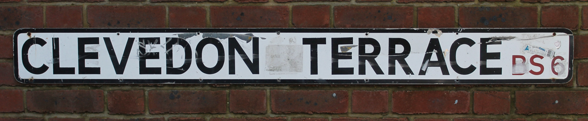
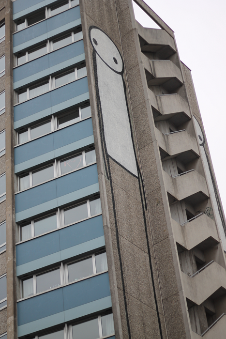

Web Technologies 2nd submission, Alex Parrott
For this assignment I choose to create a site to showcase the work of a friend of mine, Tim Clough, who is an aspiring photographer. As I am a conversion student my goal here is to demonstrate competance in all the major technologies taught (HTML, CSS, javascript) rather than showing off higher level programming skills. Instead I focussed most of my time teaching myself how to manipulate images in Gimp and animate them using Jquery. I decided to use XHTML5 in order to be more forward thinking and also experiment wth some of the more interesting newer features of the language. All coding was done using Jedit. Although written in the first person under the guise of Tim, all the text was written by myself. All pages can be accessed from the navigation bar on this page.
The Header & Navigation Bar
The header and navigation buttons (Home, Gallery, Blog, Contact) were all created using Gimp. I liked the idea of having road signs as navigation buttons. As the photographer in question is Bristol based I used a photograph of a Bristol road sign taken by the man himself:
To make the main logo I carefully erased the original lettering and used the colour picker tool to make the new blank space the same colour as the surrounding area. Then I simply added the text as a new layer, added a black and white gradient to make it look more like the original text and experimented with filters to give it a road sign look. Finally I changed the post code number 6 to a 2 (as BS2 is Tim's home postcode) using the same method.
The navigation buttons were done in a similar way. However, first I had to I remove the middle of the sign and the post code and then push the two new images together. I used various smudge and blending tools to hide the seam and give each sign slightly different imperfections and blemishes.
This replaces the old text version with dropdown menus used on my first submission. I have set up the CSS so that the navigation buttons push down when they are clicked. This section as well as the footer containing by name are on all of the pages on the site (including this one).
The Home Page (home.html)
This page is a simple text intro to the site. The main change from the first submission is the addition of a Javascript animated image slideshow which fades the various images into each other. This was my first attempt at javascript so the code was mostly a modified version of one found at snook.ca. The only changes I made were to the variables controlling the fadein and out timings. To get these to work I also downloaded the Jquery libraries which I have included unedited (jquery.js, the main library, and jquery-ui.js, an additional plugin used by Kwicks on the blog page, see below).
The Gallery (gallery.html)
Please note that I have only included this page in the zip version of the site. It is missing from the standard version due to the sub folder set up needed to make the embedded gallery work properly. Simply having everything in one folder would not work in this case. The gallery itself is an animated sldeshow showcasing Tim's photograghy. This framework was taken from www.juicebox.net and is a free download. I decided to use this to demonstrate ability to integrate someone else's code into my own HTML. I generated the image gallery and their captions using the Juicebox GUI which in turn created an XML file for the javascript to execute. The script entitled gallery.js was the only script I edited myself to give the gallery the correct look needed to fit the theme of the rest of the site (namely the colouring). The juicebox.js script was included unedited.
The Blog Page (blog.html)
This page has three columns created in CSS by first making a left and right column and then sub-dividing the right column into another two. I took this approach to avoid using the less supported CSS columns method. The two cartoon men ("Mac" on the left and "Swirly" on the right. Don't ask.) on this page were created using Inkscape. The inspiration came from a similar graffiti image on a building on Nelson Street in downtown Bristol. That's the painted gent in the image here if you are interested.
The main outline and shapes were created as a simple SVG. Standard outline shapes were created first and then the cut path tool to remove areas of overlap. After this, lines and curves were added to make arms and legs. Finally, a filter in Gimp was added to give the images a more hand drawn cartoon vibe. A third man (a copy of Swirly, on the right, but with a red face) was created in Gimp so that when the mouse is over the original image, his face turns red. This is a simple illusion created by toggling between the two different images whenver the mouse is over the image. This effect was created using a script that I wrote using the Jquery library (the source code for this can be found in the vert_accordion.js file).
The centre column of this page is an animated Jquery accordion. Within the accordion I have embedded an image slider which I adapted from the Kwicks Jquery plugin (taken from www.jeremymartin.name). The code that I wrote for these can also be found in the vert_accordion.js file. The first function for the Jquery accordion I wrote myself using the Jquery website for quidance ( jquery.com). The second function was taken from the aforementioned kwicks site and I simply changed the variables (the size of images and how far the slider opens). The final function for toggling the images was written from scratch (using the jquery and W3schools site for guidance). Finally, the jquery.kwicks-1.5.1.js file was used unedited.
I also decided to experiment with the HTML5 video tag on this page which is in the "Time Lapsed" section of the accordion. My HTML code makes reference to a .ogv and .webm versions of the video. This was included so that different browers could play the video. However, I have only uploaded one version (the .mov version) to SAFE. The file sizes are fairly large but the content is exactly the same on all three versions so I deliberately left the copies out. Therefore, this content will only display in Chrome or Safari. A blank video play will display in the other browsers. Obvsiously for this site to go live I would need to include the other two versions on the server.
Contact Page (contact.html)
The contact form was created entirely using CSS. I wanted to avoid javascript in this case to illustrate skill in CSS instead. The code all written from scratch except the contact form send button which was taken from www.red-team-design.com and modified to fit in with the theme of my site. This form is pure CSS, I have not included a PHP file to validate or action it. Therefore, when you click send the page simply refreshes. I left the PHP out as it falls into the server side which we have not covered yet and I wanted to focus on showing competance in what has been featured in the lectures.
I used the image of the telephone box on this page as I felt it fit in with the city based theme of the site. This image was cut out and rendered using Gimp.
Testing
All pages were validated using Total Validator using the HTML5 polyglot standard. These were then converted to .xhtml files and tested successfully on the latest versions of Chrome, Firefox, Safari and Internet Explorer 9. My CSS was also validated using the W3 CSS validator. Testing did reveal that download time was too slow so I used Gimp and ImageOptim (a PNG compressor) to scale down the size of my images.
I am pleased with the look of the site and the fact that the photographer in question is also very satisfied with the result which he hopes to use after I have the marks back. I am particularly happy with the logo which took quite some time to make look realistic. For some reason I have a strange love for the two cartoon men aswell. The first man started simply as an experiment but the more time I spent on him the more attached I became... The blog page is the page I spent the most time on and equally is the page that I am most pleased with.